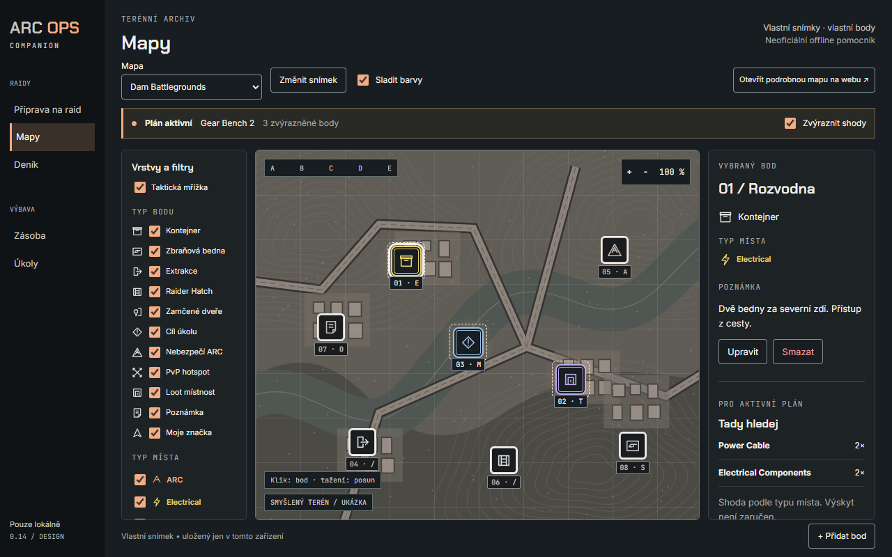
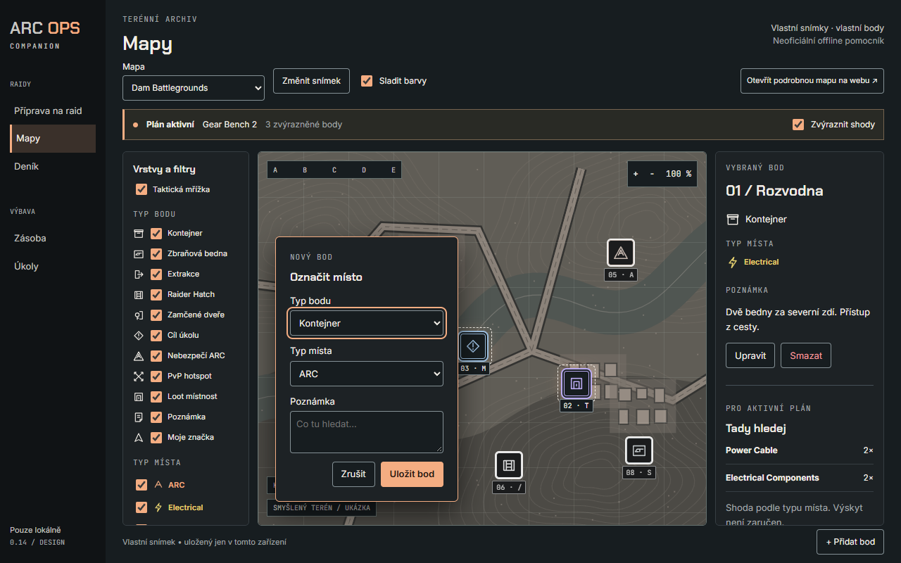
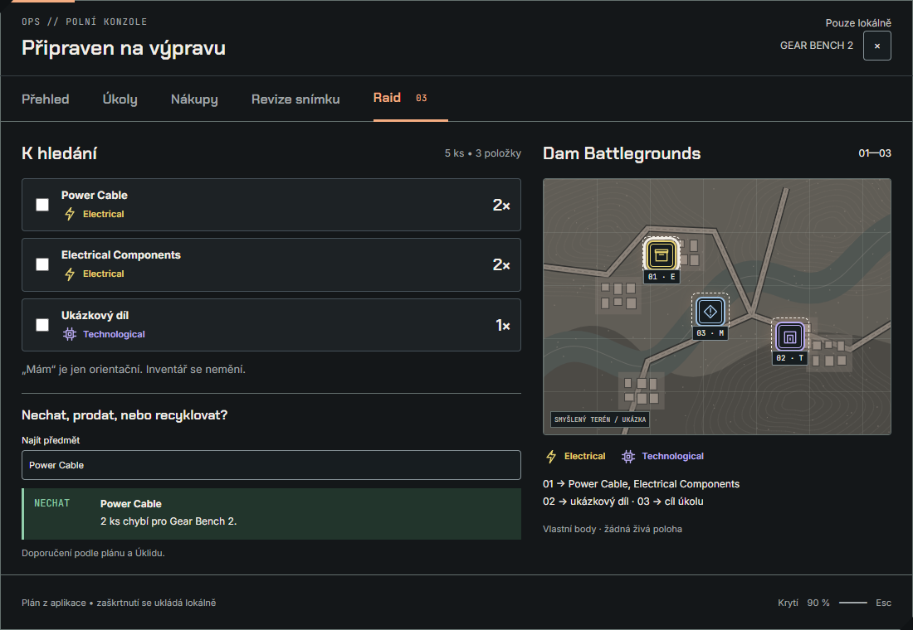
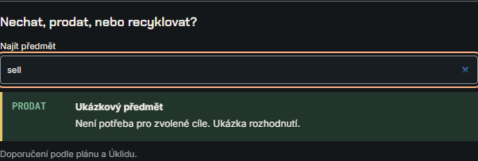
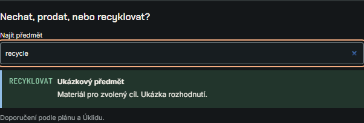
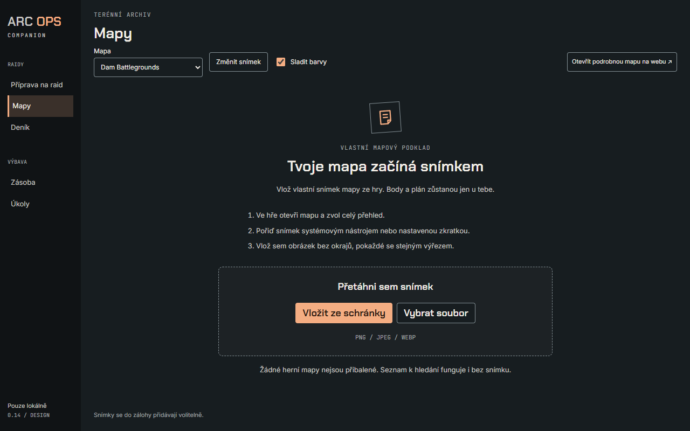
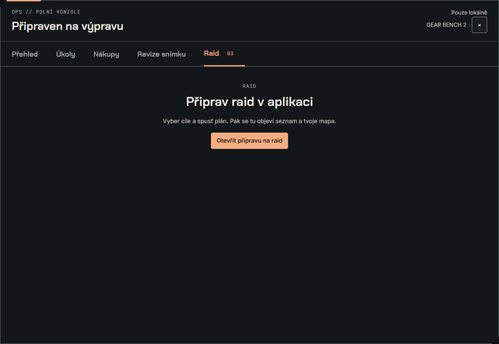
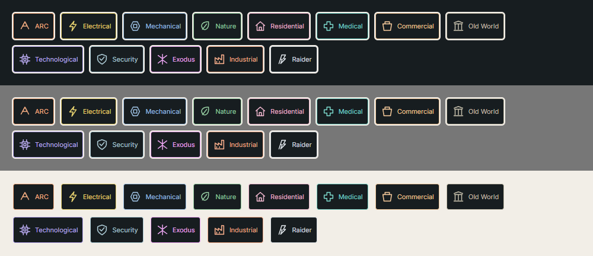
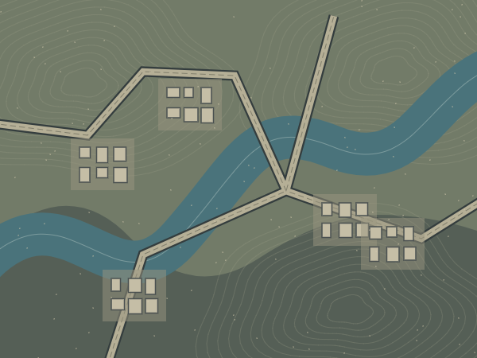
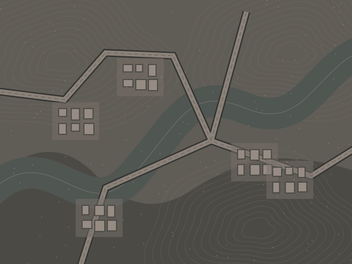

Taktická vrstva nad vlastním snímkem. Grafit a meruňka, původní geometrické značky, čitelnost nad každým podkladem. Všechen terén v tomto balíčku je smyšlený.
Implementační poznámky · Ověření · Tokeny



Vyhledávání v maketě: Power Cable / sell / recycle → tři stavy doporučení.




Samostatné SVG a PNG sprite sheety; pořadí v manifestu. PNG sprite 24 px
#F4AD82 / #8B451C
#E6D16F / #695700
#9CBFE0 / #275C87
#94CBA0 / #316A3D
#E9B2C9 / #8F3F61
#78D2C6 / #12685F
#ECC396 / #81541F
#C4BEAB / #635C40
#BAABF2 / #60409A
#ACCAD5 / #315D70
#E9A4F0 / #873C8E
#F2AA88 / #8E4628
#D7DDE2 / #4D5965

#F4AD82 / #8B451C
#E6D16F / #695700
#9CBFE0 / #275C87
#94CBA0 / #316A3D
#E9B2C9 / #8F3F61
#78D2C6 / #12685F
#ECC396 / #81541F
#C4BEAB / #635C40
#BAABF2 / #60409A
#ACCAD5 / #315D70
#E9A4F0 / #873C8E
#F2AA88 / #8E4628
#D7DDE2 / #4D5965


saturate(.38) sepia(.22) hue-rotate(345deg) brightness(.72) contrast(.92)
Glow se nehýbe. Výběr používá bílý obrys, shoda s plánem přerušovaný rámeček. Utlumené body si zachovávají neprůhledný podklad.
Silné stránky: oddělené významy typu bodu a místa, offline soubory, dvojitá kontura nad libovolným snímkem, viditelný kontext plánu. Rizika: husté shluky, nízká výška a náhrada snímku s jiným výřezem. Při implementaci zajistit seskupování, seznam bodů pro klávesnici a kontrolu registrace snímku. Tato maketa neověřuje nativní fokus overlaye ani čtení skutečné mapy.